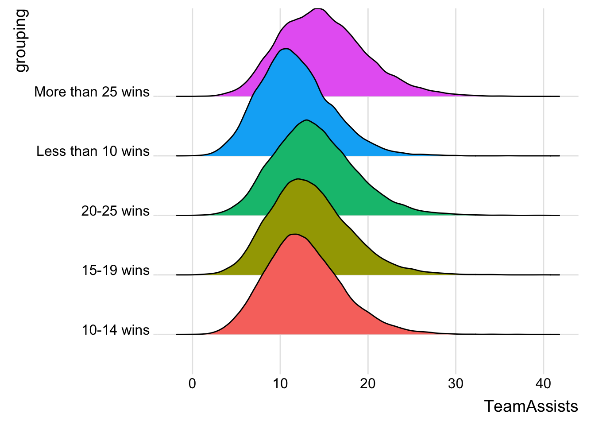
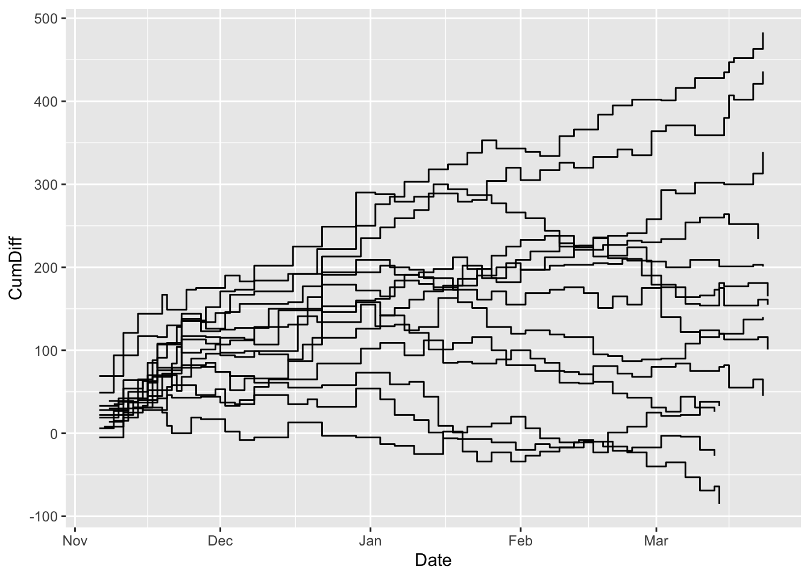

Chapter 18 Ridge charts
Ridgeplots are useful for when you want to show how different groupings compare with a large number of datapoints. So let’s look at how we do this, and in the process, we learn about ggplot extensions. The extensions add functionality to ggplot, which doesn’t out of the box have ridgeplots (sometimes called joyplots).
In the console, run this: install.packages("ggridges")
Now we can add those libraries.
library(tidyverse)
library(ggridges)##
## Attaching package: 'ggridges'## The following object is masked from 'package:ggplot2':
##
## scale_discrete_manualSo for this, let’s look at every basketball game played since the 2014-15 season. That’s more than 28,000 basketball games. Download that data here.
logs <- read_csv("data/logs1519.csv")## Warning: Missing column names filled in: 'X1' [1]## Parsed with column specification:
## cols(
## .default = col_double(),
## Date = col_date(format = ""),
## HomeAway = col_character(),
## Opponent = col_character(),
## W_L = col_character(),
## Blank = col_logical(),
## Team = col_character(),
## Conference = col_character(),
## season = col_character()
## )## See spec(...) for full column specifications.So I want to group teams by wins. Wins are the only thing that matter – ask Tim Miles. So our data has a column called W_L that lists if the team won or lost. The problem is it doens’t just say W or L. If the game went to overtime, it lists that. That complicates counting wins. And, with ridgeplots, I want to be be able to separate EVERY GAME by how many wins the team had over a SEASON. So I’ve got some work to do.
First, here’s a trick to find a string of text and make that. It’s called grepl and the basic syntax is grepl for this string in this field and then do what I tell you. In this case, we’re going to create a new field called winloss look for W or L (and ignore any OT notation) and give wins a 1 and losses a 0.
winlosslogs <- logs %>% mutate(winloss = case_when(
grepl("W", W_L) ~ 1,
grepl("L", W_L) ~ 0)
)Now I’m going to add up all the winlosses for each team, which should give me the number of wins for each team.
winlosslogs %>% group_by(Team, Conference, season) %>% summarise(TeamWins = sum(winloss)) -> teamseasonwinsNow that I have season win totals, I can join that data back to my log data so each game has the total number of wins in each season.
winlosslogs %>% left_join(teamseasonwins, by=c("Team", "Conference", "season")) -> wintotallogsNow I can use that same case_when logic to create some groupings. So I want to group teams together by how many wins they had over the season. For no good reason, I started with more than 25 wins, then did groups of 5 down to 10 wins. If you had fewer than 10 wins, God help your program.
wintotallogs %>% mutate(grouping = case_when(
TeamWins > 25 ~ "More than 25 wins",
TeamWins >= 20 & TeamWins <=25 ~ "20-25 wins",
TeamWins >= 15 & TeamWins <=19 ~ "15-19 wins",
TeamWins >= 10 & TeamWins <=14 ~ "10-14 wins",
TeamWins < 10 ~ "Less than 10 wins")
) -> wintotalgroupinglogsSo my wintotalgroupinglogs table has each game, with a field that gives the total number of wins each team had that season and labeling each game with one of five groupings. I could use dplyr to do group_by on those five groups and find some things out about them, but ridgeplots do that visually.
Let’s look at the differences in rebounds by those five groups. Do teams that win more than 25 games rebound better than teams that win fewer games?
The answer might surprise you.
ggplot(wintotalgroupinglogs, aes(x = TeamTotalRebounds, y = grouping, fill = grouping)) +
geom_density_ridges() +
theme_ridges() +
theme(legend.position = "none")## Picking joint bandwidth of 0.88## Warning: Removed 2 rows containing non-finite values (stat_density_ridges).
Answer? Not really. Game to game, maybe. Over five seasons? The differences are indistiguishable.
How about assists?
ggplot(wintotalgroupinglogs, aes(x = TeamAssists, y = grouping, fill = grouping)) +
geom_density_ridges() +
theme_ridges() +
theme(legend.position = "none")## Picking joint bandwidth of 0.601## Warning: Removed 2 rows containing non-finite values (stat_density_ridges).
There’s a little better, especially between top and bottom.
ggplot(wintotalgroupinglogs, aes(x = Team3PPCT, y = grouping, fill = grouping)) +
geom_density_ridges() +
theme_ridges() +
theme(legend.position = "none")## Picking joint bandwidth of 0.0156## Warning: Removed 2 rows containing non-finite values (stat_density_ridges).
If you’ve been paying attention this semester, you know what’s coming next.
ggplot(wintotalgroupinglogs, aes(x = TeamFGPCT, y = grouping, fill = grouping)) +
geom_density_ridges() +
theme_ridges() +
theme(legend.position = "none")## Picking joint bandwidth of 0.0102## Warning: Removed 2 rows containing non-finite values (stat_density_ridges).